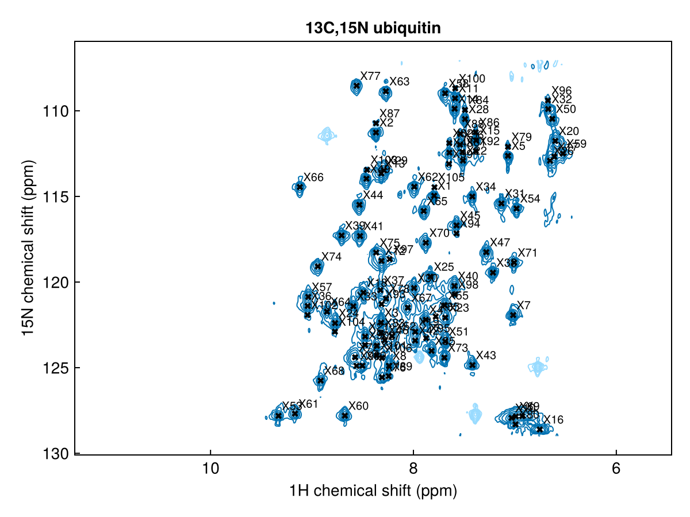
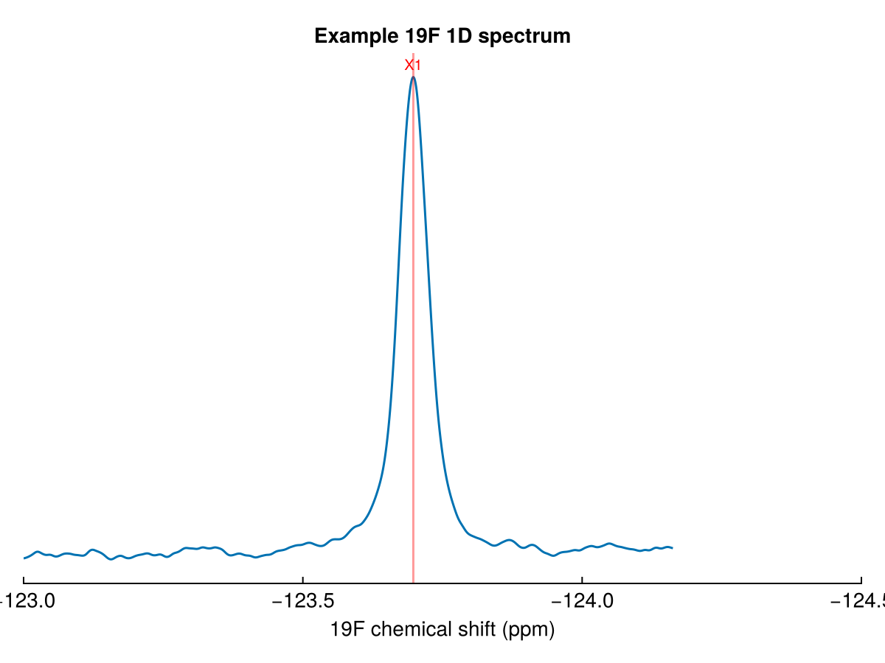

Peaks and peak lists
NMRTools represents a peak with the Peak{N} type: a position in ppm, a height, a linewidth in Hz and a label. A peak list is simply a Vector{Peak{N}}, so the usual tools for vectors (sorting, filtering, indexing, push! and deleteat!) all work, and a peak list is also a Tables.jl table, so DataFrame(pks) works directly.
Peak lists are written in the peaklist.csv format used by NMRAnalysis.jl, so peaks picked here can be loaded straight into an NMRAnalysis analysis, and vice versa.
Detecting peaks
detectpeaks finds the peaks in a 1D, 2D or higher-dimensional spectrum:
using NMRTools, CairoMakie
spec = exampledata("2D_HN")
pks = detectpeaks(spec; sign=:positive)106-element Vector{Peak{2}}:
label x (ppm) y (ppm) lwx (Hz) lwy (Hz) intensity
X1 7.79577 114.958 18.7071 18.606 88641.3
X2 8.36937 111.268 20.8663 21.3132 83539.6
X3 8.31883 122.37 19.5823 25.193 71443.8
X4 7.87775 122.204 26.8778 23.9376 67824.8
X5 7.06773 112.628 16.0961 18.7858 63339.3
X6 6.98976 127.845 NA 22.117 56918.4
X7 7.01687 121.93 23.5222 22.0615 53612.3
X8 8.24091 124.896 21.3806 25.1384 53330.8
X9 6.92844 127.831 37.1131 22.3159 52537.1
⋮
X98 7.59331 120.726 20.377 20.4424 5738.33
X99 7.64939 113.101 26.6429 34.4897 5693.7
X100 7.58808 108.69 20.405 14.8804 5640.63
X101 8.36093 124.289 23.864 NA 5391.35
X102 9.04388 121.923 23.2359 28.4145 5376.75
X103 8.45677 113.449 31.7347 17.0753 5193.3
X104 8.77356 122.897 20.8266 23.2174 5174.74
X105 7.79259 114.465 12.9459 8.51764 5166.77
X106 8.31072 124.433 29.1047 46.1701 5153.01A peak is a local maximum whose height exceeds a threshold, by default ten times the noise level. Positions and heights are refined beyond the digital resolution by parabolic interpolation, and the linewidth in each dimension is estimated from the half-height crossings. Peaks are returned strongest first and labelled X1, X2, … to match the labels NMRAnalysis gives new peaks.
The threshold can be set relative to the noise or absolutely, and negative peaks can be included or picked on their own:
detectpeaks(spec; snr=20) # only peaks above 20σ
detectpeaks(spec; threshold=1e6) # an absolute threshold
detectpeaks(spec; sign=:negative) # negative peaks only; the default is :bothTo pick peaks in a pseudo-2D experiment, index one plane first, e.g. detectpeaks(spec[:, 1]).
Like the processing functions, detectpeaks, register and savepeaks have forms for use in a pipeline:
pks = loadfid("hsqc/1") |> autoprocess |> realest |> detectpeaks(snr=20)
pks |> savepeaks("peaklist.csv")
loadbmrb(15000, H1, N15) |> register(spec) |> savepeaks("bmrb.csv")Plotting peaks
nmrplot! overlays a peak list on a spectrum. 2D peaks are drawn as labelled crosses:
fig, ax, _ = nmrplot(spec)
nmrplot!(pks)
fig
and 1D peaks as vertical lines, with their labels along the top of the axis:
spec1d = exampledata("1D_19F")
fig, ax, _ = nmrplot(spec1d; xlims=(-123, -124.5))
nmrplot!(detectpeaks(spec1d))
fig
With Plots.jl, plot!(pks) does the same.
Working with peaks
Use the accessor functions rather than reaching into the fields:
p = pks[1]
ppm(p) # position, ordered like the spectrum's dimensions(7.7957671281768794, 114.95784886559858)linewidth(p) # full width at half maximum in each dimension, in Hz(18.70706633504243, 18.605996730028355)intensity(p) gives the height and label(p) the label. Linewidths are kept in Hz because they mean the same thing on every nucleus and at every field; the corresponding relaxation rate is π * linewidth(p, n). A quantity that is not known, such as the linewidth of a peak read from a Sparky list, is NaN.
Peaks are immutable, so changing a peak means making a new one. Peak(p; ...) copies a peak with any of its fields replaced, which makes assignment straightforward:
pks[1] = Peak(pks[1]; label="G10")
pks[1]Peak{2} G10
position (ppm): 7.79577, 114.958
linewidth (Hz): 18.7071, 18.606
intensity: 88641.3Peaks can also be created by hand, or snapped onto the nearest maximum in a spectrum with findpeak:
findpeak(spec, (8.5, 120.0); label="L23")Peak{2} L23
position (ppm): 8.49265, 120.619
linewidth (Hz): 26.5436, 22.7097
intensity: 42729.4Sorting and filtering use the same accessors:
sort(pks; by=intensity, rev=true) # strongest first
sort(pks; by=p -> ppm(p, 1), rev=true) # left to right
filter(p -> 7.5 < ppm(p, 1) < 9, pks) # a region of the spectrumSaving and loading
savepeaks writes a peaklist.csv that NMRAnalysis.jl reads directly, and loadpeaks reads it back, along with lists written by NMRAnalysis and simple hand-made lists of label x y lines:
savepeaks("peaklist.csv", pks)
pks = loadpeaks("peaklist.csv")The file has one row per peak, with units in the column names:
# NMRTools.jl peak list
label,plane,x (ppm),y (ppm),lwx (Hz),lwy (Hz),intensity
G10,,8.5013,120.371,23.1,14.2,2.53e7x is the direct dimension and y the indirect one. The blank plane column means the position applies to every plane of a series, which is how NMRAnalysis reads it. Labels identify peaks in NMRAnalysis, so they must be unique; unlabelled peaks are written as X1, X2, ….
Sparky .list files are written and read too. Sparky lists the indirect dimension first, which is the reverse of NMRTools' order. Passing the spectrum to loadpeaks checks the order against where the shifts actually fall, so a list written the other way round is still read correctly:
savepeaks("hsqc.list", pks)
pks = loadpeaks("hsqc.list", spec)Registering a peak list onto a spectrum
A peak list made for one spectrum rarely lines up exactly with another, because of differences in referencing, temperature or sample conditions. This applies to a list carried over from an earlier spectrum of the same sample, and even more to one predicted from assigned chemical shifts (see Assigned chemical shifts from the BMRB). register! finds the single offset that best matches the list to the observed peaks and moves the list by it:
register!(pks, spec) # reports the offset applied
register!(pks, spec; maxshift=(0.3, 2.0)) # limit the search, in ppm per dimensionEvery offset within maxshift (by default 10% of the spectral width) is tried, scoring how much signal lies under the shifted peaks. Absolute intensities are used, so negative peaks count as much as positive ones, and the score grows only logarithmically with intensity, so a single very strong peak cannot outweigh many weaker matches. register returns a moved copy instead. Only a uniform translation is applied; individual peaks are not moved.